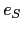

Sig: Eliminación de la Recursión Sup: Analizadores Descendentes Predictivos en Ant: Recursión por la Izquierda Con:
Por ejemplo, si en la regla
 insertamos un fragmento de código:
insertamos un fragmento de código:
La acción
 se ejecutará después de todas las acciones
asociadas con el recorrido del subárbol de
se ejecutará después de todas las acciones
asociadas con el recorrido del subárbol de  y antes que todas
las acciones asociadas con el recorrido del subárbol
y antes que todas
las acciones asociadas con el recorrido del subárbol  .
.
El siguiente esquema de traducción recibe como entrada una expresión en infijo y produce como salida su traducción a postfijo para expresiones aritmeticas con sólo restas de números:
|
|
{ expr.TRA = expr[1].TRA+" "+NUM.VAL+" - "} |
|
|
{ expr.TRA = NUM.VAL } |
Las apariciones de variables sintácticas en una regla de producción se indexan
como se ve en el ejemplo, para distinguir de que nodo del árbol de análisis estamos
hablando. Cuando hablemos del atributo de un nodo utilizaremos el punto (.).
Aquí VAL es un atributo de los nodos de tipo  denotando
su valor numérico y para accederlo escribiremos
denotando
su valor numérico y para accederlo escribiremos NUM.VAL.
Análogamente expr.TRA denota el atributo
traducción de
los nodos de tipo .
En este ejemplo, el cómputo del atributo expr.TRA depende de los atributos
en los nodos hijos, o lo que es lo mismo, depende de los atributos de los símbolos
en la parte derecha de la regla de producción. Esto ocurre a menudo y motiva la siguiente
definición: